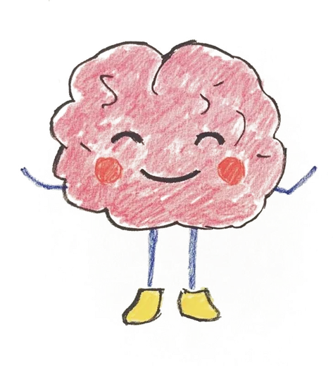

Over de Bijzondere Breintjes
Wat is Bijzondere Breintjes?
Wij maken liedjes, hoorspelen en spelletjes over gevoelens, voor kinderen van 3 tot 8 jaar. Zo leren kinderen zichzelf beter begrijpen en ontdekken ze wat hen helpt. Elke maand is er een nieuw thema. Nu is dat Als alles te veel is, over overprikkeling, met het liedje O, o, o, o overprikkeling.
Voor wie is het?
Voor elk kind dat veel voelt, snel vol zit of zijn gevoel nog moeilijk kan zeggen. Een diagnose is niet nodig. Ouders, juffen, meesters en de BSO kunnen het samen met kinderen gebruiken, thuis of in de klas.
Wie maken het?
Wij zijn Nicky en Gert. We schrijven, zingen en bedenken alles zelf. Nicky is afgestudeerd pedagogisch begeleider en heeft jarenlang in de zorg met kinderen gewerkt.
Kost het geld?
Het thema van de maand en het liedje zijn gratis. Later komt er een Club, met elke week een nieuw deel van het hoorspel, een opdracht en een werkblad voor ouders.
Zien kinderen reclame?
Nee. Op deze website spelen de liedjes in onze eigen speler, zonder reclame.
Wat kun je meteen doen?
Luister samen naar het liedje en praat erover: wat helpt jou als het te veel is?